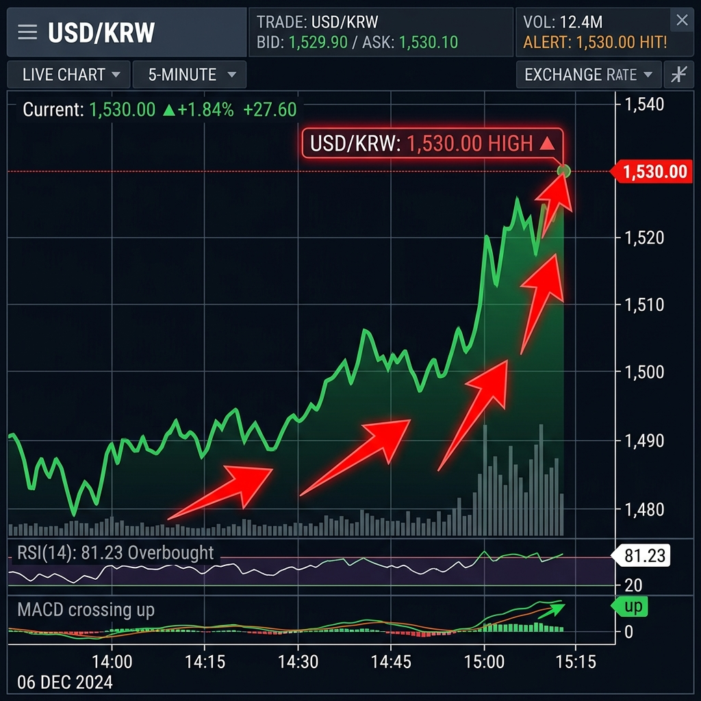
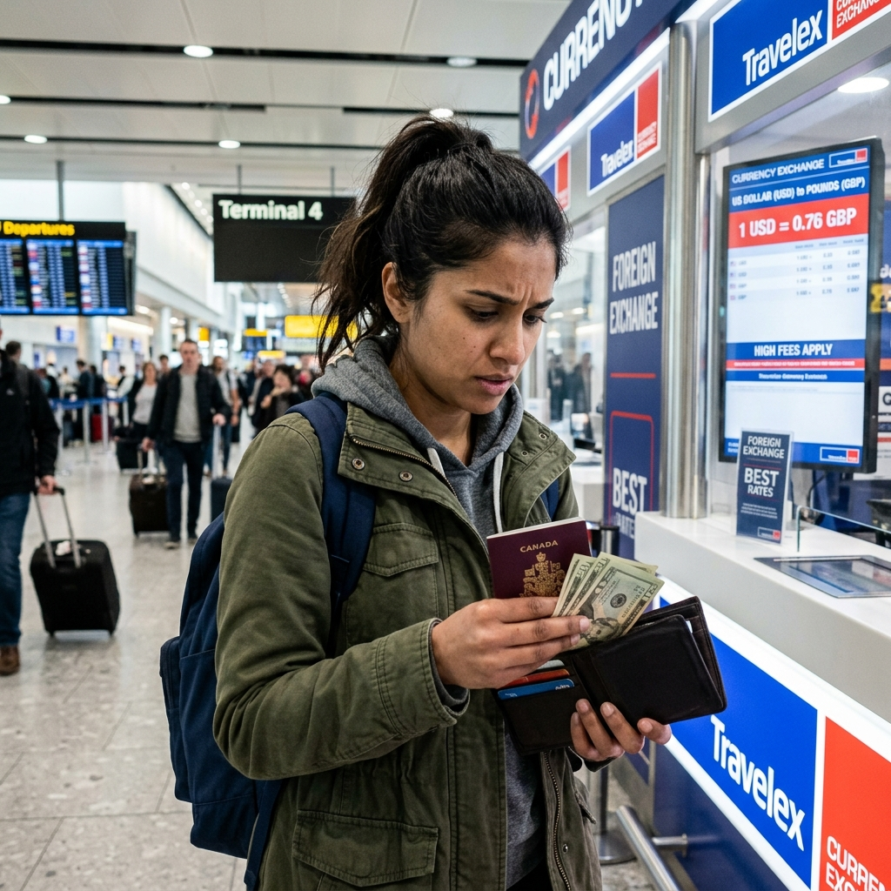

원-달러 환율 1,530원 돌파, 경제 위기인가? — 고환율 시대 자산 관리 및 실생활 대응 전략
"원-달러 환율 1,500원 시대가 현실이 되었습니다."
최근 외환시장이 심상치 않습니다. 2009년 3월 이후 17년 만에 처음으로 원-달러 환율이 장중 1,530원을 돌파하며 가계와 기업 모두에 비상이 걸렸는데요. 유가 급등과 금리 불확실성이 맞물리며 '킹달러'
현상이 심화되고 있는 지금, 고환율이 우리의 주머니 사정에 어떤 영향을 미치는지 분석하고, 소중한 자산을 지키기 위한 현실적인 대응책을 제시해 드립니다.

▲ 가파르게 치솟는 환율 그래프는 한국 경제에 커다란 하방 압력으로 작용하고 있습니다.
1. 환율 1,530원 돌파의 배경: 왜 이렇게 오르나?
이번 고환율 사태는 단일 요인이 아닌 복합적인 글로벌 변수들이 충돌하며 발생했습니다.
- 미국 연준(Fed)의 금리 동결 장기화: 연준은 2025년 말 세 차례 금리 인하 이후 2026년 들어 기준금리(3.50~3.75%)를 연속 동결하며 관망 기조를 이어가고
있습니다. 인플레이션이 여전히 목표치(2%)를 웃도는 상황에서 추가 인하 시점이 불투명해지자 달러 강세가 지속되고 있습니다.
- 중동 긴장에 따른 유가 급등: 지정학적 리스크로 국제 유가(WTI)가 배럴당 110달러를 넘어서면서, 에너지 수입 의존도가 높은 한국의 무역 수지에 빨간불이 켜졌고 이는
곧 원화 약세로 이어졌습니다.
- 안전자산 선호 심리: 글로벌 경제 불확실성이 커질수록 투자자들은 위험 자산 대신 가장 안전한 자산인 '달러'로 몰리는 경향이 뚜렷해집니다.
2. 고환율이 실생활에 미치는 3대 타격
숫자로만 다가오던 환율은 조만간 우리의 마트 영수증과 여행 계획표를 바꿔놓을 것입니다.
고환율 직격탄 리포트
- 수입 물가 상승(미친 장바구니): 밀가루, 식용유 등 수입 원자재 가격이 오르면서 가공식품과 외식 물가가 동반 상승하게 됩니다.
- 해외 여행 및 직구 중단: 1달러당 1,300원일 때와 비교하면 1,530원은 약 18%의 추가 비용이 발생합니다. 여행 경비와 해외 쇼핑 가격이 그만큼 비싸진
셈입니다.
- 유류비 부담 가중: 환율 상승은 원화 기준 원유 도입 가격을 높여 국내 기름값 인상을 부추깁니다.

▲ 공항 환전소 앞에서 깊은 시름에 잠긴 여행객들의 모습이 늘어나고 있습니다.
3. 고환율 시대, 내 자산을 지키는 포트폴리오 전략
위기는 곧 기회이기도 합니다. 현시점에서 고려해야 할 자산 관리 방안을 제안합니다.
| 자산 종류 |
대응 전략 |
기대 효과 |
| 금융 자산 |
달러 예금 및 외화 ETF 분산 투자 |
환율 추가 상승 시 환차익 기대 |
| 실물 자산 |
금(Gold) 현물 또는 ETF 비중 확대 |
인플레이션 및 통화 가치 하락 방어 |
| 주식 시장 |
수출 비중이 높은 우량주(자동차, 조선) 주목 |
환율 상승에 따른 영업이익 개선 수혜 |
| 현금 보유 |
무리한 대출 자제 및 예적금 금리 비교 후 활용 |
변동성 장세에서 유동성 확보 및 안정적 수익 |
환테크, 지금 뛰어들어도 될까?
이미 1,500원을 넘긴 시점에서의 추격 매수는 위험할 수 있습니다. 외환 당국의 시장 개입 가능성과 한국 경제의 기초 체력을 고려할 때 단기 조정을 받을 수 있기 때문입니다. 따라서 한꺼번에 많은 금액을
바꾸기보다는 분할 매수 관점에서 접근하는 지혜가 필요합니다.
▲ 불확실한 시장 상황에서는 변동성을 견딜 수 있는 안전자산의 비중이 중요해집니다.
4. 전문가들이 바라보는 향후 환율 전망
대부분의 경제 전문가들은 당분간 1,500원대 중반의 고환율 기조가 유지될 것으로 보고 있습니다. 다만 미국 연준의 추가 금리 인하 시점이 구체화되고 중동 리스크가 완화된다면 점진적으로 안정세를 찾을
것이라는 전망도 있습니다. 그러나 연준 내부에서도 금리 인하 횟수를 축소하는 방향의 의견이 늘고 있어 낙관론과 비관론이 팽팽히 맞서고 있습니다. 중요한 것은 '환율 상단이 열려
있다'는 전제하에 보수적인 소비 활동을 이어가는 것입니다.
슬기로운 경제 생활 팁: 환율이 높을 때는 해외 직구보다는 국내 재고 상품이나 이월 상품 기획전을 활용하세요. 또한 유류비를 아끼기 위해 알뜰 주유소 앱을 적극 활용하는 것도
작은 도움이 됩니다.
5. 맺음말 — 차분한 대응이 필요한 시점
환율 1,530원은 분명 우리 경제에 무거운 경고등입니다. 하지만 1997년 외환위기나 2009년 금융위기 당시와는 달리 현재 우리나라의 외환보유액과 경상수지 체질은 상대적으로 견고하다는 평가도 많습니다.
막연한 공포심에 휩싸이기보다는 내 가계의 현금 흐름을 점검하고, 고환율 상황에 맞는 유연한 경제 전략을 세워야 할 때입니다.
면책 조항 및 안내
본 포스팅은 2026년 4월 현재의 거시 경제 지표와 뉴스를 바탕으로 작성된 정보성 콘텐츠입니다. 실제 투자 결정에 따른 책임은 투자자 본인에게 있으며, 시장 상황은 실시간 변동될 수 있습니다. 보다 정확한
정보는 금융감독원 공시나 경제 신문의 전문 분석 리포트를 참고하시기 바랍니다.
👉 경제 상식 더 보기: [금리 인상기에 웃는 예적금 특판 상품 고르는 법]
태그:
#원달러환율1500원
#고환율시대대응
#경제위기징조
#환테크전략
#달러예금
#금투자방법
#수입물가상승
#해외직구팁
#킹달러현상
#거시경제분석
#인플레이션대비
#재테크꿀팁
#외환시장전망
#킹달러
#안전자산추천